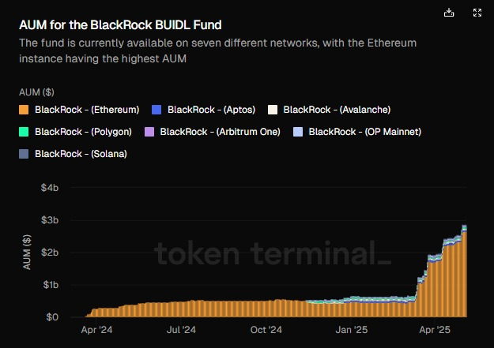
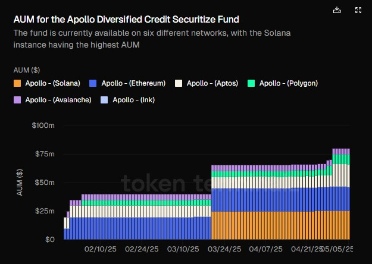

How BlackRock's BUIDL and Apollo's ACRED Are Lighting the Fuse on a Trillion-Dollar Tokenization Wave
Executive Summary
Tokenized financial assets are unlocking new sources of liquidity, broadening investor access, and driving efficiency in global capital markets. As of April 2025, on-chain real-world assets (RWAs) total roughly $18.85 billion, with nearly 100,000 unique asset holders and almost 200 issuers—a metric set that has grown double-digits over the past year.
Two flagship case studies illustrate this trend: BlackRock's USD Institutional Digital Liquidity Fund (BUIDL) has amassed $1.7 billion across seven blockchains and is on track for $2 billion by April 2025; Apollo's Diversified Credit Securitize Fund (ACRED) tokenizes a $1.2 billion private-credit vehicle, delivering on-chain access to institutional-grade credit strategies.
Mainstream institutions are allocating 5–9% of portfolios to TFAs, and forecasts range from $2 trillion to nearly $19 trillion in tokenized asset value by 2030–33 (McKinsey & Company). This article examines definitions, benefits, adoption metrics, these two case studies, and the outlook for the tokenization ecosystem.
What Are Tokenized Financial Assets?
Definition and Mechanics
Tokenization is the process of issuing a unique digital representation ("token") of a real-world asset on a blockchain, whether that asset is equity, debt, real estate, or a money-market fund.
Tokens carry embedded ownership rights and can be programmed via smart contracts to automate corporate actions (dividends, voting) or settlement functions.
Key Benefits
Fractional Ownership & Liquidity
Breaking high-value assets into smaller tokens allows more investors to participate, enhancing liquidity in traditionally illiquid markets.
Transparency & Efficiency
On-chain settlement reduces middlemen, cuts settlement times from days to minutes, and provides real-time auditability.
Accessibility
Investors across geographies can access institutional-grade products 24/7 via digital wallets, without traditional gatekeepers.
Programmability
Conditional logic in smart contracts can automate compliance, corporate actions, and secondary-market trading, though it introduces new "programmability paradox" risks.
Market Landscape & Adoption Metrics
Current On-Chain RWA Market
- Total RWA Value: $22.11 billion on-chain
- Total Asset Holders: 100,115
- Total Issuers: 189
Institutional Interest
A survey by EY projects institutional portfolios will allocate ~5.6% to tokenized assets by 2026; high-net-worth investors even more (~8.6%) EY.
17% of institutions already hold TFAs; 55% plan allocations within 1–2 years EY.
Growth Trajectory
The global tokenization-services market (platforms, custodial, compliance) was $2.3 billion in 2021 and is forecast to reach $5.6 billion by 2026 (CAGR 19%).
McKinsey estimates total tokenized market capitalization (ex-crypto) could hit $2 trillion by 2030 (range $1–4 trillion).
BCG + Ripple paint a bull case of $18.9 trillion by 2033, driven by bonds, real estate, and private credit.
Case Study 1: BlackRock's BUIDL Fund
Overview
- Fund Name: BlackRock USD Institutional Digital Liquidity Fund ("BUIDL")
- Launch: March 2024 on Ethereum; expanded to six additional chains (Polygon, Aptos, Arbitrum, Optimism, and, as of Mar 25 2025, Solana).
- Assets Under Management: $2.86 billion as of May 2025.
- Holders: 62 on-chain wallets.
Why It Matters
- 24/7 Access & Settlement: Unlike traditional money-market funds with cut-off times, BUIDL tokens settle on-chain in minutes, enabling true continuous liquidity.
- Institutional Validation: BlackRock's entry—and its partnership with Securitize—validates RWA tokenization as more than a niche experiment.
- Ecosystem Growth: BUIDL's expansion to Solana underscores the competitive advantage of scalable, low-fee Layer 1 networks in hosting TFAs.
Comparative Landscape
- Franklin Templeton's OnChain U.S. Government Money Fund (FOBXX) holds $692 million and has 558 holders.
- Other tokenized treasuries: Hashnote USYC, Ondo U.S. Dollar Yield (USYD).
Case Study 2: Apollo's ACRED Fund
Overview
- Fund Name: Apollo Diversified Credit Securitize Fund ("ACRED")
- Underlying Strategy: $1.2 billion Apollo Diversified Credit Fund—non-traded interval fund investing in corporate direct lending, asset-backed finance, structured credit.
- Launch Date: Jan 30 2025; first on-chain feeder fund for Apollo's private-credit.
- Networks: Ethereum, Aptos, Avalanche, Ink, Polygon, Solana; interoperable via.
- Access: Qualified investors via Securitize Markets with daily NAV redemptions in digital.
Performance & Adoption
- AUM: $80.12 million legacy fund; on-chain feeder is nascent but "already proving attractive" to both institutional and individual investors.
- Return Profile: Underlying fund delivered ~11.7% in 2024 vs. ~4.5% U.S. Treasuries; target of current income + capital appreciation with low volatility correlation.
Significance
- Private Credit On-Chain: First major tokenization of private credit, opening a $300 trillion global credit market to programmable finance.
- Operational Efficiency: Native on-chain redemptions streamline cash flows and remove manual reconciliation, custodian interfaces, and multi-day settlement.
- Broader RWA Trend: ACRED exemplifies move into fixed-income and credit tokenization—the "next wave" of RWA demand.
Impact on Market Adoption
Retail vs. Institutional
- Retail investors gain fractional access to money-market and private-credit instruments once limited to institutions.
- Institutional allocators are piloting TFAs in treasury, bond, and credit portfolios, often via private on-chain networks (Canton, Ondo, etc.).
Network Effects
- As more flagship funds (BUIDL, ACRED, USYC) launch on multiple chains, liquidity pools deepen and secondary markets become more efficient.
- Interoperability layer providers (Wormhole, Etherealize) reduce fragmentation and encourage cross-chain flows.
Regulatory Developments
- U.S. SEC engagement remains cautious but Securitize's broker-dealer / ATS registration signals evolving compliance frameworks.
- MakerDAO's $1 billion tokenization contest and Abu Dhabi's digital bond pilot highlight both DeFi and government support.
Future Forecasts
| Source | Year | Tokenized Asset Value Forecast |
|---|---|---|
| McKinsey | 2030 | $1–4 trillion (base $2 T) |
| Standard Chartered | 2030 | $30.1 trillion |
| BCG + Ripple | 2033 | $18.9 trillion |
| MarketsandMarkets (tokenization market) | 2026 | $5.6 billion (services market) |
Bull vs. Bear: Morgan Stanley-style bear case (~$1 T) vs. bull (> $20 T) hinges on regulatory clarity, institutional onramps, and interoperability standards.
Sector Growth: Real estate and private credit poised for outsized growth; treasury tokenization already grew ~6× in past year to >$5 billion CoinDesk.
Key Takeaways & Recommendations
- Product Innovation: Traditional asset managers should pilot tokenized fund structures (money-market, credit, bond) to meet 24/7 liquidity demands.
- Technical Infrastructure: Embrace multi-chain deployment and interoperability (e.g. Wormhole) to capture diverse liquidity and investor bases.
- Regulatory Engagement: Work with registered platforms (Securitize Markets, regulated ATS) to ensure compliance and build institutional trust.
- Investor Education: Highlight benefits—fractional ownership, transparency, programmable features—and provide clear on-chain reporting dashboards.
Conclusion
Tokenization of financial assets has moved from proof-of-concept to real-world scale. BlackRock's BUIDL and Apollo's ACRED demonstrate an institutional appetite for on-chain cash and credit products, collectively bridging the $300 trillion traditional credit markets with decentralized finance. With on-chain RWA value approaching $19 billion, and forecasts running into the trillions over the next decade, market participants who build robust, compliant, and interoperable tokenization solutions will lead the next wave of financial innovation.